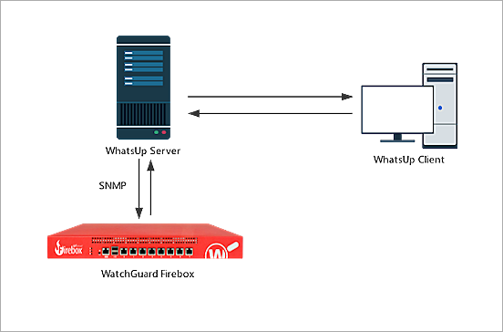
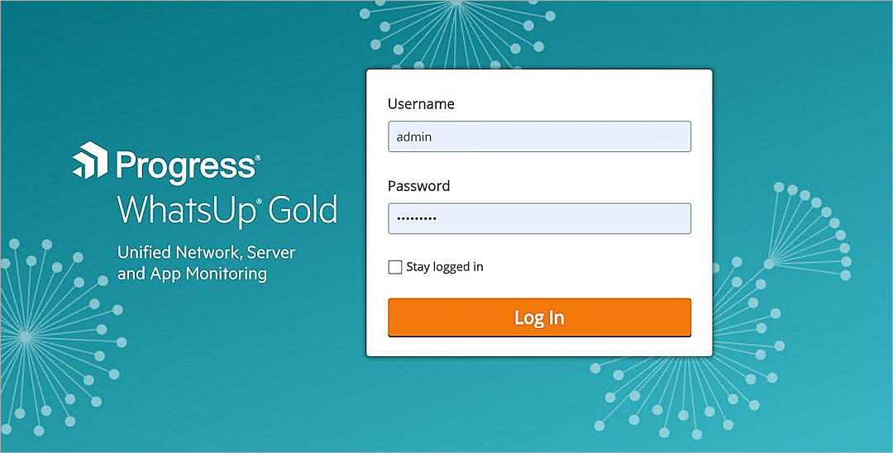

WhatsUp® Gold monitors, reports, alerts, and takes action on the status of network devices, systems, and services. It also installs, discovers, and maps topology and network connected assets. WhatsUp leverages SNMP v1/2/3 and WMI to keep the network running and provides alerting and notification capabilities to keep you informed about issues on your network.
This document describes the steps to integrate your WatchGuard Firebox with WhatsUp Gold.
Platform and Software
The hardware and software used to complete the steps outlined in this document include:
- WatchGuard Firebox installed with Fireware v12.7 or higher
- WhatsUp Gold 2021 (21.0.2 Build 175), Total Plus Edition installed on Windows Server 2019 Standard Edition

Set Up the Firebox
Before WhatsUp can discover your Firebox, you must configure SNMP settings in Fireware Web UI.
To configure SNMP settings and add a firewall policy, from Fireware Web UI:
- Select System > SNMP.
- From the Version drop-down list, select v3.
- From the Authentication Protocol drop-down list, select SHA1.
- In the Password and Confirm text boxes, type the authentication password.
- From the Privacy Protocol drop-down list, select DES.
- In the Password and Confirm text boxes, type the encryption password.
- In the User Name text box, type a name.
- Click Save.

- Select Firewall > Firewall Policies.
- Click Add Policy.
- Create an SNMP packet filter policy that allows SNMP traffic from Any-Trusted to Firebox.

If you connect to an optional interface, specify Any-Optional instead of Any-Trusted.
Set Up WhatsUp
The steps to set up WhatsUp include:
- Scan the network
- Turn on monitoring
- Add an SNMP active monitor for the device
- Add a performance monitor for disk utilization
To scan the network, from the WhatsUp web UI:
- Log in as an administrator.
- Select Discover > New Scan.
If this is the first time you access the site or no device is under monitor, you can also click Start Scan Now in the center of the page. - In the Start step of the Discovery Scan wizard, select the Single device, multiple devices, IP ranges or subnets check box, and type the IP address of your Firebox. Click Next.
- Click Next in Expand and Limit page. keep default settings.
- In the Credentials step, click
 to expand the drop-down list.
to expand the drop-down list. - Select SNMP v3.
The Add SNMP v3 Credential dialog box opens. - Specify the information shown in this image. Click Save. The password should match the password set in the Firebox.
- In the list, select the SNMP v3 credential you created. Click Next.
- Click Next again to go to the last step of the wizard.
- In the Name text box, type a name for the scan.
- Click Save & Run Now.



To turn on monitoring:
- Select Discover > Discovered Network.
- Select your device in the list.
- In the right pane, click Start Monitoring.
- In the pop-up that opens, click Start.

To add an SNMP active monitor for the device:
- Select the My Network tab and select your device.
- In the data sheet, click
 in the upper-right corner and select Device Properties.
in the upper-right corner and select Device Properties. - Click and select Active Monitor.
- From the drop-down list, select SNMP. Click Next.
- Select a network interface. Click Next.
- Select the Create Action set for this device only option.
- Click Add.
The Action Builder dialog box opens. - Specify the action properties. Click OK.
- Click Finish.


To add a performance monitor for disk utilization:
- Click and select Performance Monitor > Use a library monitor.
- In the Configure Performance Monitor dialog box, select Disk Utilization.
Other monitors are available by default. - Click Next.
- Select the All disks option.
- Click Finish.


Test the Integration
- In the WhatsUp Gold web UI, select the MY NETWORK tab.
- Select your device.
- In the data sheet, click in the upper-right corner and select Device Status.
The Monitoring page shows basic information about the device. - To show information on CPU and memory utilization, click Disk/CPU/Memory.
- To show interface utilization and other interface information, click Router/Switch/Interface.
- To show device information, status, and statistics, click General.